AWSタグが付けられた新着記事 - Qiita
タグの概要・特徴Amazon Web Services（AWS） は、2006年にAmazonが提供を開始した包括的で進化し続けるクラウドコンピューティングサービスプラットフォームです。AWSは、スタートアップから大企業まで、幅広いユーザー層に対して柔軟で信頼性の高いインフラストラクチャを提供しています。AWSはインフラストラクチャサービス（IaaS）、プラットフォームサービス（PaaS）、およびソフトウェアサービス（SaaS）を含む多岐にわたるサービスを提供しています。これには計算能力、ストレージ、データベース、機械学習、データ分析、IoT、セキュリティといった幅広い分野が含まれます。AWSのサービスはスケーラブルであり、必要に応じてリソースを追加・削減できるため、コスト効率の良い運用が可能です。主な用途としては、以下のような分野があります：コンピューティング: Amazon EC2やAWS Lambdaを使用して、仮想サーバーのデプロイやサーバーレスアーキテクチャの実現が可能です。ストレージ: Amazon S3やAmazon EBSを使用して、大容量データのストレージと管理ができます。データベース: Amazon RDS、Amazon DynamoDB、Amazon Redshiftを使用して、リレーショナルデータベースやNoSQLデータベースの構築・運用が可能です。機械学習: Amazon SageMakerを使用して、機械学習モデルの構築、トレーニング、デプロイを行えます。ネットワーキング: Amazon VPC、AWS Direct Connectを使用して、安全でスケーラブルなネットワーキング環境を構築できます。セキュリティ: **AWS Identity and Access Management (IAM)**を使用して、ユーザーやグループのアクセス制御を管理できます。AWSの利点スケーラビリティ: リソースを必要に応じて追加・削減でき、大規模なトラフィックにも対応可能です。コスト効率: 使用した分だけ支払う従量課金制で、無駄なコストを削減できます。高可用性: グローバルに分散されたデータセンターにより、高い可用性と信頼性を提供します。セキュリティ: 強力なセキュリティ機能とコンプライアンス対応により、データの保護と規制準拠を実現します。リファレンス公式サイト: AWS - Amazon Web Services公式リファレンス: AWS DocumentationWikipedia: Amazon Web Services - WikipediaAWSブログ: AWS Blog関連タグEC2LambdaS3RDSDynamoDBRedshiftSageMakerVPCIAMCloudFormationElastic BeanstalkDirect Connect
フィード
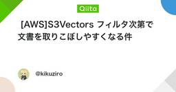
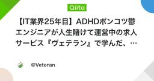
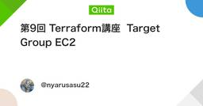
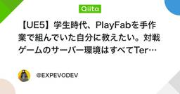
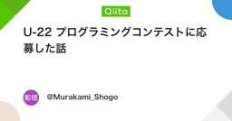
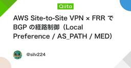
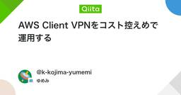
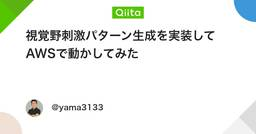
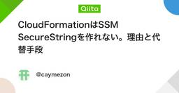
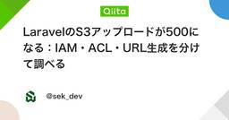
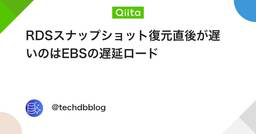
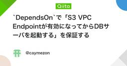
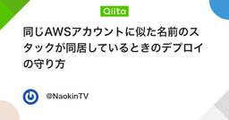
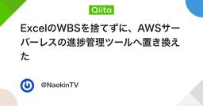
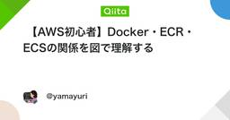
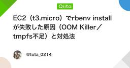
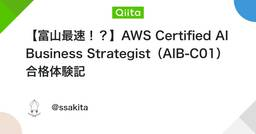
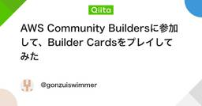
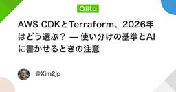
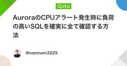
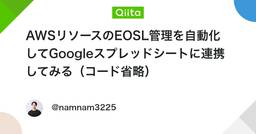
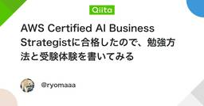
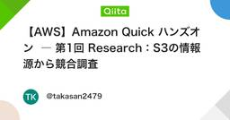
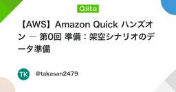
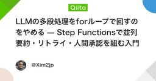
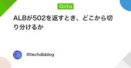
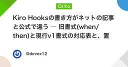
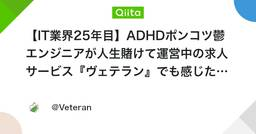
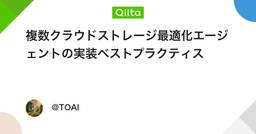
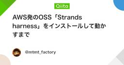
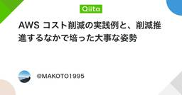
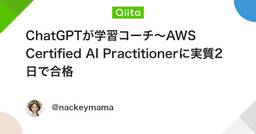
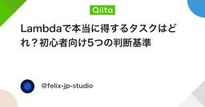
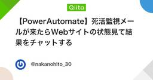
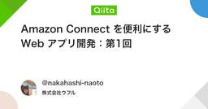
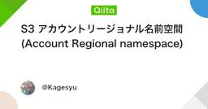
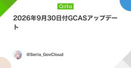
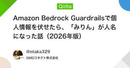
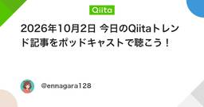
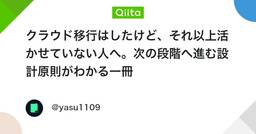
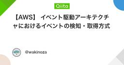
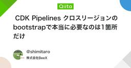
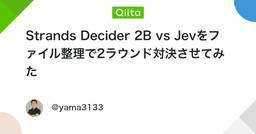
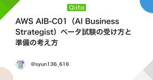
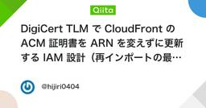
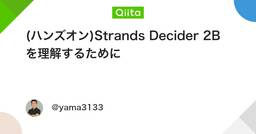
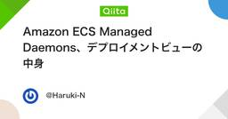
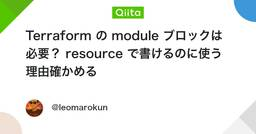
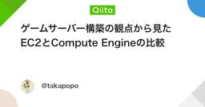
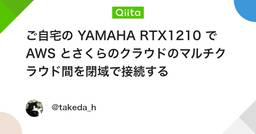